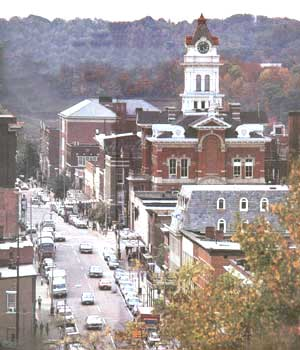
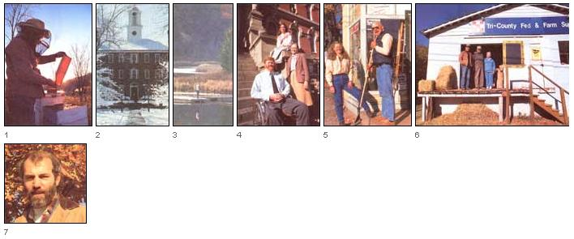
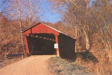
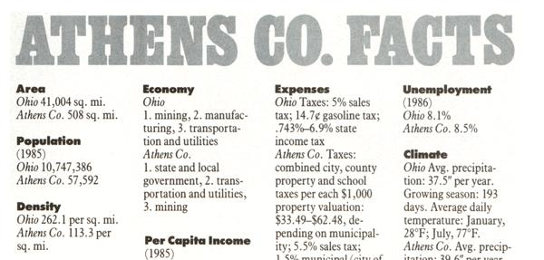
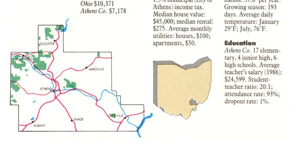

Athens County Ohio: Cream Of The Country
To Ohioans there is Athens, the county, and then there is Athens, the hustling county seat and the home of Ohio University.
By Terry Krautwurst
May/June 1989
IT'S A STRAIGHT SHOT OUT OF Columbus on route 33 to the hills of southeast Ohio, and I waste no time putting the airport and the All-American City's fast, busy outer belt behind me. Columbus was home for eight years, and I remember-with some disbelief, now-how I used to thrive on early morning competitive car-dodging, a rush-hour ritual that was at least as good as a couple of cups of black coffee in sheer wake-up power. Now I just want to get away from the traffic; I barely glance at familiar buildings and landmarks. In the decade-plus since I left the area, Columbus has become a much bigger town-and I've become a much-smaller-town person. Finally, the city fades in my rearview mirror.
Flat. Sheesh, I'd forgotten how flat central Ohio is. "Only" 2 million years ago, as geologists blithely put it, the entire state was rolling or steep hill country, the eroded remains of primordial seabeds after some 60 million years of wind and rain, freezing and thawing, heaving and upheaving. Then came the last ice age, when sheets of ice up to a mile thick slowly ground over the region, sandpapering the hills, filling in deep river valleys and generally leveling the land encompassing 56 of present-day Ohio's 88 counties. The glaciers stopped just short of southeastern Ohio, leaving the rugged terrain there intact but adding new streams and rivers created by glacial meltwater.
As I drive south, passing beyond the bustling, industrial town of Lancaster, in Fairfield County, the countryside begins to change from glaciated flat to unglaciated rolling, and off to my left a wide plain of farmland is bisected by a winding path of willows and oaks, trees tracing the banks of one glacier-spawned tributary, the Hocking River. This is the northernmost end of the
Hocking River Valley, a region of rich history and natural beauty that embraces all or portions of six Buckeye counties: Fairfield, Hocking, Perry, Vinton, Morgan and Athens. It's October, and the hills, growing increasingly steep and close now, are aglow in vibrant gold and yellow fall foliage.
In Hocking County, I pass the exits for Hocking Hills State Park-actually a cluster of state-managed parks and woodland encompassing some 9,000 spectacular acres of forests, gorges and caves. The entire valley offers much, but I've decided to focus on Athens County (pop. 57,592) for its afford able real estate, cultural diversity, near-but-far proximity to major cities, and other reasons both objective and, I admit, subjective.
When I think of the first time I came to Athens County, I have to laugh and shake my head at the peculiar workings of fate and time. It was 19 years ago1970and I'd driven down from Columbus for the weekend to visit a friend who'd rented an old farmhouse in the hills. No one was home when I arrived, so I settled into a mostly seatless rocking chair on the front porch and picked up a copy of a strange little pulp-paper magazine I'd never seen or heard of before. The cover portrayed a couple holding hands in a farm field, watching a sunrise, over which was a banner that read "How to Get Out Of The City and BACK TO THE LAND." It was issue 2 of THE Mother Earth News.
I cross the line into Athens County. Here I am, almost two decades later, an editor for that little magazine, come to rediscover the county in which I discovered MOTHER.
With the exception of some plateaus in the south, Athens County's 508 square miles are mostly up, down or in between-ridgetops and river valleys and hills. The terrain has an embracing quality; not only are the people here warm and friendly, but the countryside itself seems to welcome you.
And so it has always been. The area has enticed settlers for at least the past 2,000 years. The first were the Moundbuilders, or Adena Indians, whose earthen burial mounds can still be seen throughout southern Ohio. Most of the mounds in Athens County have been destroyed, but some survive-particularly in and around the small village of The Plains, where archaeologists believe the Adenas established their largest and most important population center.
The county's more recent history, like that of all Appalachia, is one of boom and bust. The first white settlers arrived here from New England in the late 1700s, finding a wilderness thickly forested and teeming with wildlife-including buffalo, bear, wolf and mountain lion. But by the mid- 1 800s settlers had cleared the forests for farmingeven on the steep slopes-and most of the wildlife was gone. In 1880, an incredible 91% of the county's acreage294,807 acres out of a total of 325,120was listed as farmland.
From about 1870 to 1925, coal was king in Athens County. Coal had been discovered in the area decades earlier, but large-scale mining began only when the railroads reached south of the county line. Every time a new railroad line or spur reached farther into the hills, mines opened and towns sprang up. In 1920, the peak of the boom, over six and a half million tons of coal were shipped from Athens County.
Then came the bust years-brought on by labor unrest and, later, the popularity of gas and fuel oil for home heating. By the onset of World War II, most of the mines had shut down, and many of the people had moved on leaving poverty, piles of mining wastes, and empty storefronts behind. After the war and until the mid1960s, the coal companies strip-mined some parts of the county, again creating ugly scars, but those operations, too, have ceased-for now, anyway.
It's the kind of place that just naturally feels like home, even to a stranger.
Though the countryside is occasionally broken by reminders of the past-by gob piles and the ramshackle remnants of tiny mining towns near abandoned railroad spurs-Athens County clearly is in renewal. You can see the signs everywhere; in thriving community centers, village-wide cleanup campaigns, and school renovations. The hills, once denuded, are again covered with mature trees; nearly 56% of the county is back in forest. Wildlife-deer, ruffed grouse, wild turkey, quail, squirrel, rabbit, raccoon, beaver-is again abundant, providing excellent hunting (and fishing) on the county's numerous public lands and lakes: Wayne National Forest, Zaleski and Waterloo state forests, Stroud's Run and Burr Oak state parks.
In Nelsonville (pop. 4,2 10), the county's largest city before World War II and once a major coal and brick-making center, residents have launched an ambitious Renaissance Restoration Project. The town's handsome, New England-style village square has been lovingly restored. The old brickyards, with their huge domed kilns, have been turned into a tourist attraction. And the town still has a bustling industry: The Brooks Shoe Company factory keeps nearly 300 workers on the job producing more than 2,000 pairs of boots and running shoes a day.
Just outside of Nelsonville is another major employer and economic force, Hocking Valley Technical College, with 19 modern buildings spread over a 250-acre campus. More than 4,000 students from all over Ohio, 28 other states and 26 foreign countries are enrolled there, nearly doubling Nelsonville's population. And right next door is Hocking Valley Tech's close ally, Tri -County Joint Vocational School, which provides training for hundreds of high school students from Athens, Hocking and Perry counties.
To Ohioans there is Athens, the county, and then there is Athens, the centrally located county seat (pop. 20,870) and the home of Ohio University. The college, or the core of it at least, is smack in the middle of town, where the campus's stately, Corinthian-columned brick buildings and hushed, tree-shaded green add an air of classic dignity.
The sense of decorum is almost, but not quite, enough to offset the energy generated by some 16,500 students. Day and night during the school year, downtown Athens is abuzz. Bookstores, clothing stores, restaurants and taverns line Washington, Court and State streets. The flow of students cruising the sidewalks and driving the streets never really stops, though during the day there is a discernible rhythm of rise and fall, rise and fall, with the changing of classes. Music spills from passing cars and tavern doors; street vendors hawk burritos, tacos and T-shirts; footsteps and laughter and conversations blend into a single, continuous, carnival-crowd murmur.
And though the street scene sometimes gets loud and boisterous, Athens always retains its friendly small-town flavor and charm. Most of the buildings downtown date from the turn of the century or earlier. The massive brick Athens County Courthouse, built in 1879 and a landmark ever since, stands imposingly facing Court Street, its white, slate-roofed spire visible from almost anywhere in town. Narrow, brick-paved side streets lead to quiet residential areas.
Come summer, when most of the students leave, reducing the town's population by more than half-to about 10,000Athens is a typical (though perhaps unusually cosmopolitan) small, rural town. "Summer is always such a shock," one year-round resident tells me. "You just wake up one day and you think, 'what's that? And then you realize: It's the quiet! "
Regardless of the time of year, Athens benefits from the art, music, drama and other events produced or brought in by the university, making the small town something of a cultural oasis in southeastern Ohio. Likewise, the college's extensive libraries are available to the community, as are sports and recreational facilities-including a golf course and an indoor swimming pool. "Communiversity" classes, in which professors and townspeople alike teach the subjects they love most, are popular. And the university's College of Osteopathic Medicine operates a medical center in which more than 35 teaching physicians provide community outpatient care; this is in addition to the fine facilities offered by O'Bleness Memorial Hospital in Athens and Doctors Hospital of Nelsonville.
"Expect company on moving day. Folks here just sort of automatically turn out to help."
Ohio University's economic impact on the county is immense. With nearly 3,000 faculty and staff members, OU is the area's largest employer. jobs are scarce elsewhere and generally don't pay as much. "Everybody's trying to get a job at OU," one Athenian tells me. In addition, the annual influx of students pumps over a million dollars a year into the county's economy, supporting hundreds of local businesses. One study estimates that nearly half the county's total work force is employed directly or indirectly as a result of OU's presence. "The simple fact is, Athens is a company town," a long-time resident says. "It's just that the company happens to be a university."
Though the town of Athens is the county's cultural and economic center, it's the smaller communities, the hills and forests, the farms and homesteads tucked into the hollows and coves that are the real heart and beauty of Athens County. I spent my last several days in the area driving the gravel back roads (there are over 800 miles of them in the county), discovering at every turn another slice of postcardlike Americana, another soaring view, another old barn or log cabin or hand-built house, another placid ridgetop, another bib-overalled farmer with time enough to look up, smile and wave.
There's something just naturally comfortable about the county, something that says "home" even if you're a stranger. I think of the dozens of amiable, open people I met, and how the same words kept popping up when they described the county: community, friendly, neighbors, network, supportive. "I hope you get more than just facts about Athens County while you're here," Tom
O'Grady told me. "I hope you get a feeling for the land and the people here, because that's what Athens County is about: It's a feeling."
"Tell your readers this is a wonderful place to live," one 20-year resident said. "Tell them there's still lots of room here, and newcomers are welcome. Ohand tell them not to be surprised if they have company on moving day," he added, smiling. "Folks just sort of automatically turn out to help."
Just the right kind of place, it seems to me, to heed the advice in that old issue of MOTHER. just the right kind of place for folks who want to "get out of the city-and back to the land."

HARRY SNAVELY
The county's numerous parks and forests offer outdoors fans excellent hunting, fishing, boating and hiking. INSET: Ohio University's educational and cultural facilities are available to the community at large.
|

MAP BY DON OSBY
[1] ""I always wanted to form,"" says Rick Duff, who produces honey, maple syrup, beef, lamb and vegetables on 140 acres.[2] Chimes ring out regularly from OU's venerable former Hall, the oldest college building west of the Alleghenies. [3] Quiet moments come easy. [4] Roxanne Graff (top) with follow county commissioner Dom Kohler and former commissioner Karen Harvey.[5] Becky McCutcheon (shown here with her father).[6] Albany's Clara and Albert Hutchison, and employee. [7] ""I love this place,"" says Tom O'Grady, county recycling program manager
|

At every turn, another slice of Americana: More than 800 miles of back roads load you to the beauty and charm of Athens County.
|

|

|

|